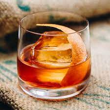

<h1>Old Fashioned</h1>

<h3>Because You Deserve It!</h3> 
<h4>Ingredients</h4>
<ul>
    <li>2 oz bourbon</li>
    <li>0.5 oz simple syrup</li>
    <li>Bitters</li>
    <li>Orange peel</li>
    <li>Ice</li>
</ul>
<h4>Steps</h4>
<ol>
    <li>Pour simple syrup and bourbon into rocks glass.</li>
    <li>Add two dashes of bitters.</li>
    <li>Add desired amount of ice.</li>
    <li>Garnish with orange peel.</li>